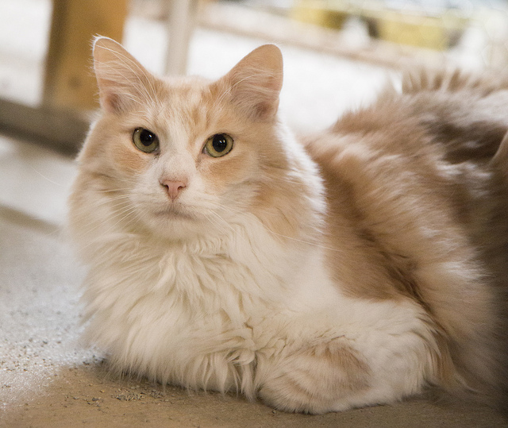

Chicago Animal Shelter
Fostering a Pet
Fostering a pet can be a rewarding experience and can allow pets to associate well with people so they can be adoptable. Everything is provided to foster parents so you can focus solely on giving your foster pet the love and care they need. Whether you have pets of your own, or are an animal lover who does not have the time for a full commitment to adopt, you can foster a pet. Foster assignments can be short or long term assignments: From days to months. Any time available allows us to service more pets and place them into loving homes. As long as your home is pet friendly, we welcome you to join us in fostering a pet and giving them a second chance at adoption.
Reasons to Foster a Pet
- By fostering, you give a pet a chance to socialize with various types of people.
- Many foster pets have not experienced much love or kindness, you can give them the chance to experience it with you.
- We work around your lifestyle and caring capabilities.
- If you fall in love with your foster pet, you are more than welcome to adopt them!
Process
- Register online using the online application.
- Conduct interview at the Chicago Animal Shelter Site.Remember to bring all of your documents needed.
- Meet with some of the animals at the shelter.
- Take classes for foster parents for cats and/or dogs.
